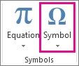

You can easily insert a special character, fraction, or other symbol in your PowerPoint presentations and Excel workbooks.
The most important thing to understand when inserting symbols, fractions, special characters, or international characters is that the font you use is critical. Not all fonts have the same characters in them. For example, the Elephant font has no fraction characters in it, while Verdana does. As a result it's important to use the right font to find the symbol or character you want.
Place your cursor in the file at the spot where you want to insert the symbol.
Go to Insert > Symbol.
Pick a symbol, or choose More Symbols.
Scroll up or down to find the symbol you want to insert.
Different font sets often have different symbols in them and the most commonly used symbols are in the Segoe UI Symbol font set. Use the Font selector above the symbol list to pick the font you want to browse through.
When you find the symbol you want, double-click it. The symbol will be inserted in your file.
Select Close.